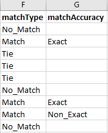
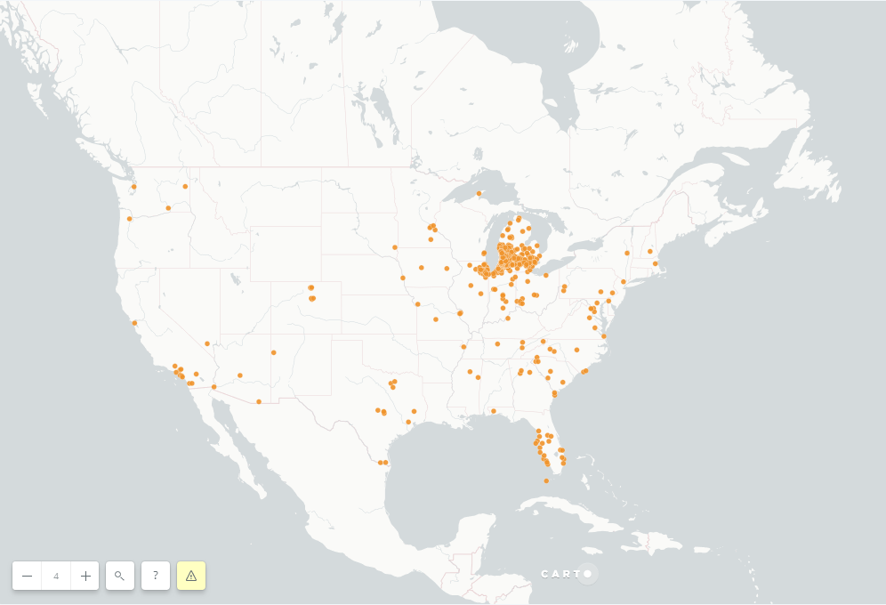
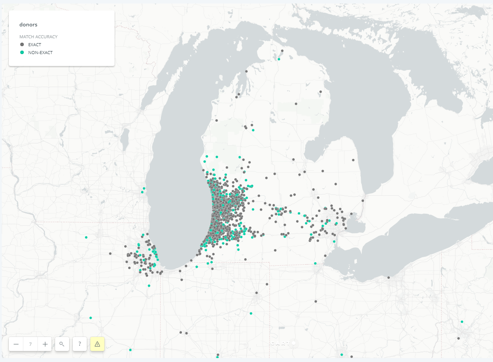

Geocoding with Python
I was tasked with mapping out the donors to a nonprofit in West Michigan. The CSV of donors numbered over 10,000. Originally, I thought about using the geopy Python library for geocoding. It makes the process of geocoding through your preferred API quite simple. For example, you can use the Open Street Map API: Nominatum.
However, after cross-checking some results, I found their accuracy to be inadequate. For now, since I want to map the results on CARTO, I have written off using Google's API because using their data would force me to use a Google basemap. Moreover, Google will only geocode 2,500 addresses per day, which would slow down the processing of over 10,000 addresses.
While there are other geocoding APIs out there, some free and some not, I decided to turn to an organization that specializes in data gathering for residences: the U.S. Census Bureau.
First, I formatted the CSV for geocoding via the pandas library:
# format CSV for census geocoder
df = pd.read_csv('geocodeOutput.csv', sep=',')
df.drop(['ID','Organization','First Name','Last Name','Phone','Email'],
axis=1, inplace=True)
df.to_csv('geocodeOutput.csv', header=False)
The maximum amount the U.S. Census Bureau can geocode per file is 10,000. Since I am working with a CSV that slightly exceeds that, I need to split the CSV in two. While there is probably a more elegant and flexible way to program this, the following should suffice:
#split CSV so there aren't more than 10,000 addresses per sheet
df1 = df.iloc[:5000]
df2 = df.iloc[5000:]
df1.to_csv('censusInput1.csv', index=False, header=False)
df2.to_csv('censusInput2.csv', index=False, header=False)
Now that I have files the census geocoder can handle, I can plug it into a function. This function will take the CSV as an input, and it will output a formatted CSV with additional information, such as latitude, longitude, match accuracy, and more.
# geocode each spreadsheet
def censusGeocode(file, output):
url = 'https://geocoding.geo.census.gov/geocoder/geographies/addressbatch?form'
payload = {'benchmark':'Public_AR_Current',
'vintage':'Current_Current',}
files = {'addressFile': open(file)}
r = requests.post(url, files=files, data=payload)
results = str(r.text)
results = re.sub('"','',results)
results = results.split('\n')
with open(output, 'w', newline = '') as geocodeOutput:
w = csv.writer(geocodeOutput, delimiter=',')
w.writerows([c.strip() for c in r.split(',')] for r in results)
censusGeocode('censusInput1.csv', 'censusOutput1.csv')
censusGeocode('censusInput2.csv', 'censusOutput2.csv')
Each function call, which geocodes around 5,000 addresses, takes around an hour and a half.
Formatting & Results
There was only one glaring error produced by the API that had to be fixed by hand. If an address had an apartment or suite number, it would put that suite number in an extra cell, thereby ruining the uniformity of the CSV. This was easily fixable by hand.

The bottom row is the desired format, the other five are skewed
Since I have to check and fix the results by hand, I put the rest of the code into a second script. To reformat all of this data, I concatenate the two CSVs back together:
# concatenate the two CSVs
df1 = pd.read_csv('censusOutput1.csv', sep=',', header=None)
df2 = pd.read_csv('censusOutput2.csv', sep=',', header=None)
frames = [df1,df2]
result = pd.concat(frames)
result.to_csv('censusConcat.csv', index=False)
Out of the 11,016 rows of data…
• 9,374 were Matches (85.1%)
• 935 were Ties (8.5%)
• 703 were No Matches (6.4%)
Out of those matches, 80.4% were exact, and 19.6% were non-exact. Match accuracies hovering around 85% seem to be adequate, though there is always room for improvement. It should be noted that some of the Ties and No Matches are due to some donors not providing data as to where they live. Moreover, this can explain how there are a total of 11,012 results (amongst match, tie, and no-match) from 11,016 rows of data.
The geocoding output produces 14 additional columns to my CSV, four of which I need: longitude, latitude, match type, and match accuracy. First I dropped superfluous columns, kept the unique ID, and then concatenated the two outputs. The API's documentation isn't fantastic, so the meaning of the match type, Tie, is not entirely clear. However, it is clear enough that both Tie and No_Match do not produce coordinates.
Next I stripped the CSV of any unnecessary data before merging it with the original document. Since the original document is only lacking coordinates and match types, I can drop everything but those four fields (latitude, longitude, match type, and match accuracy). In the next step, I'll need to merge this output with the original spreadsheet, therefore, values must be ordered based on its index so the spreadsheets will match up.
# keep unique ID, addresses, match type/accuracy, and lat/long
df = pd.read_csv('censusConcat.csv', sep=',', engine='python')
cols = ['1','2','3','4','7','8','9','10','13','14','15','16','17','18']
df.drop(cols, axis=1, inplace=True)
df.sort_values(by=['0'], inplace=True)
df.to_csv('censusConcatStrip.csv', index=False)
Now it is ready to merge with the original spreadsheet:
# join the census output with the original CSV
dfA = pd.read_csv('geocodeFinal.csv', sep=',')
dfB = pd.read_csv('censusConcatStrip.csv', sep=',')
dfMerge = dfA.merge(dfB, right_index=True, left_index=True)
dfMerge.to_csv('geocodeFinalRough.csv', index=False)
With all data acquired, the spreadsheet just needs to be cleaned up and reformatted.
# clean up the file and rename columns
df = pd.read_csv('geocodeFinalRough.csv', sep=',')
df.drop(['ID','0'], axis=1, inplace=True)
df.rename(index=str,columns={'Unnamed: 0':'serial_id',
'5':'match_type',
'6':'match_accuracy',
'11':'lng',
'12':'lat'}, inplace=True)
df.to_csv('donors.csv', index=False)
And with this, the final product can be uploaded to CARTO. The latitude and longitude do not need to be converted to a shapefile; CARTO simply recognizes those columns and converts it to something mappable.
Donors throughout the continental United States
Exact (grey) and non-exact (blue) matches in the Michigan area.
Another version of this map is used for the header of this website.